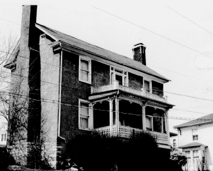

102 S. Washington Street
Staunton, Virginia

-
-
Constructed: 1819-1820
-
Original Use: Residential
-
Ownership History: Owner not known. Building appraised at
$2,150.00 in 1820.
-
Number of Stories: 3
-
Architectural Style: Vernacular
-
Exterior Features: Gabled roof with single-story porch over
Greek revival doorway. Porch with sawn millwork added after
construction. Stone foundation with stucco added over
frame.
-
Interior Features: N/A